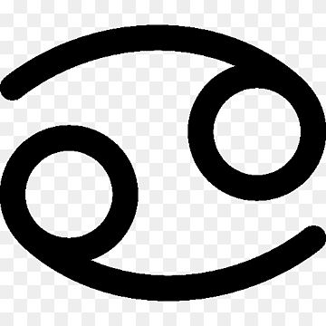
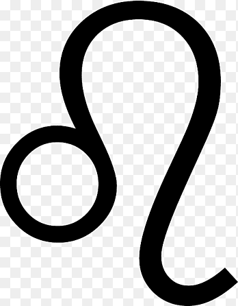
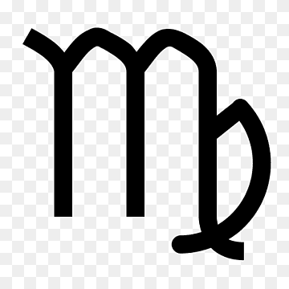
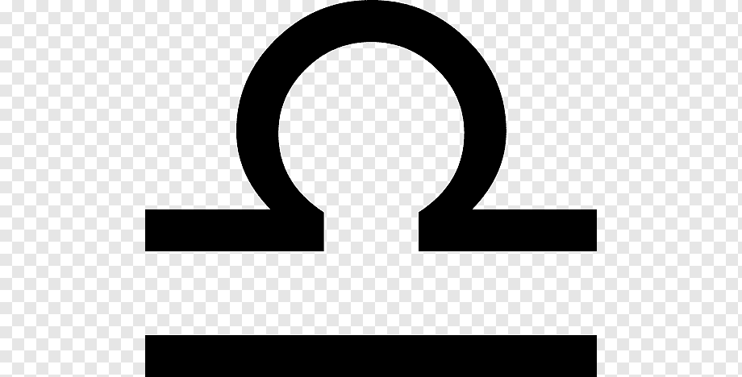
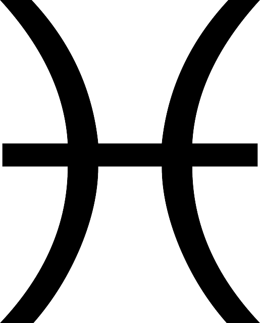

| Fecha |
Dinero |
Trabajo |
Numero |
Salud |
Amor |
Signo |
| 21/03-19/04 |
Por eso, si se fijan una meta, por inverosímil que parezca, hacen lo posible por cumplirla. Así que, este signo debe aprovechar esa ambición personal para conseguir una meta: hacerse millonario. |
Las personas de Aries se destacan por su fuerte liderazgo y defensa de sus convicciones, lo que los hace ideales para trabajos como abogado. |
63, 76, 55, 36, 13 |
Aries se encuentra libre de preocupaciones en lo que se refiere a enfermedades ni dolencias corporales. Contarás con una vitalidad y energía grandiosa para hacer todo lo propuesto. Disfruta de este gran momento personal. |
Es posible que los arianos se lancen a las relaciones muy rápido, y no son de los que siguen el protocolo habitual de las citas. Si a las personas con este signo del zodiaco les gusta alguien, es posible que al principio quieran estar cerca
de ella todo el tiempo, pero puede ser que sus aventuras se esfumen tan rápido como empezaron. |
|
| 20/04-20/05 |
Tauro es un signo zodiacal que tiene cierta destreza para administrar el dinero y las finanzas, una característica que es muy favorable para lograr sus propósitos económicos. |
Como buen signo del elemento Tierra, son responsables y dedicados en sus trabajos, y esto ayuda a que puedan acceder a grandes cargos con salarios que les permitan disfrutar sus múltiples gustos. |
6. El 2, 5 y 8 |
Tauro siempre estará pendiente del estado de salud de sus familiares. De hecho, en algunas ocasiones Tauro estará más pendiente de la salud de los demás que de su propio estado. |
Les gustan las relaciones serias y que la otra persona sea muy sincera respecto al futuro. De hecho, si ve que la otra parte no se lo está tomando lo suficientemente en serio, puede huir por miedo a que le rompan el corazón. |
|
| 21/05-20/06 |
De acuerdo con las predicciones de la astrología, el primer signo que está destinado a ser millonario es Géminis. |
Las personas Géminis son muy versátiles, pero en los campos profesionales en los que más cómodos estarán y podrán destacar son los relacionados con la comunicación. Inteligentes, versátiles, con don de la palabra, contradictorios, inquietos. |
5. También, 3, 6 y 9 |
La inquietud de los Géminis pueden traer algunos problemas de nervios. Los hombros, brazos y pulmones, son las partes del cuerpo que más se debería cuidar pues en este signo tienden a ser más delicadas. |
Les encanta sentirse queridos, saber que son una prioridad para la otra persona y que les consientan y les den cariño. Dan mucha importancia a la comprensión y a poder mantener una buena conversación con esa persona. |
|
| 21-22/07 |
Los nacidos bajo el signo cáncer tienen una poderosa intuición para los negocios, lo que les permite encontrar oportunidades para generar más dinero antes que otros. |
En el trabajo, las personas bajo este signo del zodiaco se caracterizan por ser triunfadores, ambiciosos y persistentes. Se proponen nuevas metas y no se dan por vencidos hasta alcanzarlas. |
10-95-84. |
Los Cáncer tienen una memoria extraordinaria y además poseen un talento innato para las artes y las letras notable. |
Cáncer ama con todo su ser. Son personas que buscan relaciones profundas y sentirse plenamente queridas, además, huyen de las montañas rusas emocionales: necesitan estabilidad y que ese amor sea de por vida. |

|
| 23/07-22/08 |
Leo se encontrará bajo la guía sabia del Sol, iluminando el camino hacia decisiones financieras sólidas. |
Los Leo son unos líderes claros a quienes se les dan bien las tareas de dirección por delante de aquellas destinadas a la realización de un trabajo. |
1, 2, 5 y 8 |
La salud de Leo en el 2024 será una prioridad destacada, ya que la vitalidad y el bienestar son esenciales para mantener su fuego interior ardiendo con fuerza. |
Leo es romántico, algo caprichoso, poco fiel y prisionero de la belleza. Además, no le falta sinceridad, por lo menos mientras dura el amor, no más. |
 |
| 23/08-22/09 |
En el ámbito financiero, 2024 traerá oportunidades de estabilidad y crecimiento. Presta atención a tus gastos y gestiona tu presupuesto de forma responsable. |
Meticulosos en el trabajo, los Virgo son muy solicitados donde se requiere una gran precisión mental y habilidad. |
5, 3, 6 y 9 |
La salud y el bienestar ocupan un lugar destacado en su vida y lo tendrá muy en cuenta para sus seres más queridos. |
Virgo es una persona cariñosa, entregada y fiel. La pasión no es su fuerte, pero su romanticismo, atención por los detalles y ternura resultan sorprendentes y suplen en cierta medida su falta de decisión. |
 |
| 23/09-22/10 |
Procure no desperdiciar las energías en ese negocio que pretende montar sin medir las consecuencias, ya que luego se arrepentirá y podrá perder dinero. |
En el trabajo no dudarán en dedicar todo su esfuerzo y en sus decisiones primarán la verdad y la justicia, aunque en ocasiones pueden tardar en tomarlas, ya que un rasgo característico de los Libra es su manifiesta indecisión. |
7 |
Los Libra destacan por tener buena salud, sin embargo, tienen dolencias al igual que ocurre con todos los signos del zodiaco. |
Cuando se trata de amor, el romanticismo es una constante en su unión, también la búsqueda de la belleza (tanto física como interna o espiritual) y su tendencia al hedonismo. |
 |
| 23/10-21/11 |
Esto hace que este signo se encuentre en una posición privilegiada como un buen generador y proveedor de dinero, ya que la ambición hace que lleguen muy lejos. |
No les gusta que les den instrucciones sobre cómo hacer su trabajo. Esto los predestina a ser autónomos, y buscar trabajos en los que puedan dar rienda suelta a su sed de acción. Por regla general, no temen que su proyecto fracase porque tienen
en cuenta todos los detalles. |
9 también, 2, 5 y 8 |
Escorpio es el signo que tiene una mayor capacidad para regenerar sus enfermedades, y aunque se trata de un proceso que se lleva a cabo con lentitud, pueden llegar a conseguir incluso una sanación total de enfermedades que por la medicina
eran consideradas muy difíciles de curar. |
Además, como intensos que son, lo de ser sutiles no va con ellos y van a ir directos al tema. Son muy pasionales y protectores, aunque también algo celosos y posesivos. |
|
| 22/11-21/12 |
Sagitario prefiere tener un flujo de dinero constante, ya que sus intereses cambian muy a menudo. Además, suele hacer compras compulsivas y, en ocasiones, se pasa de la raya gastando. |
Los Sagitario son personas muy intuitivas y muy activas en el trabajo, que siempre están pesando en comenzar nuevos retos profesionales. |
3, 6 y 9 |
Los Sagitario son un signo que está cargado de puntos fuertes como su gran decisión, su vitalidad o su gran energía, lo que hace que por lo general sean personas a las que les gusta mucho el deporte, siendo esto un punto muy a su favor para
poder disfrutar de una buena salud. |
Son muy independientes, valoran mucho su libertad y lo más importante para ellos es compartir intereses con su pareja. Son algo impacientes, así que, si están interesados en alguien no dudarán en tomar la iniciativa. |
|
| 22/12-20/01 |
Los capricornio están destinadas también a convertirse en millonarios porque tienen mucha ambición y determinación, además de darle mucha importancia a todo lo material y monetario. |
En general, son personas trabajadoras, responsables y dispuestas a persistir lo que haga falta para conseguir su objetivo; además son muy fiables y cuentan con unas elevadas dosis de paciencia y resistencia para avanzar hacia sus objetivos;
en este sentido, su capacidad para la gestión resulta asombrosa. |
8 |
De los Capricornio se suele decir que tienen bastante buena salud, siempre y cuando se cuiden, tanto física como mentalmente. |
Valoran mucho la inteligencia, la lealtad y el compromiso y, pese a parecer fríos, pueden llegar a ser muy cariñosos y detallistas si se enamoran de verdad. |
|
| 21/01-19/02 |
Hoy resguarde ese dinero extra que recibirá, ya que no es momento optimo para invertirlo. Aguarde a que se estabilice la economía y luego inviértalo. |
Si eres Acuario siempre estás trabajando en ser una mejor versión de ti misma, y eres capaz de esforzarte a diario para lograr tus objetivos. |
19 y 20. |
Eso sí, los altos niveles de trabajo podrían hacer aparecer ciertos episodios de estrés, que deberás contrarrestar. |
Son tan independientes que les cuesta bastante enamorarse. Para ceder un poco de libertad, tienen que estar muy enamorados. |
 |
| 20/02-20/03 |
El 2024 ofrece a Piscis la oportunidad de gestionar sus finanzas con una combinación única de intuición y sabiduría. |
Por un lado, por lo tanto se vincula a los Piscis con profesiones como terapeuta o psicólogo, farmacéutico, científico. |
91-22-87 |
Debes analizar un poco más la manera que tienes de relacionarte con los demás. |
Estás atravesando una luna de miel en la pareja. Todo marcha perfectamente y no hay pronóstico de tormentas en el horizonte. |
 |